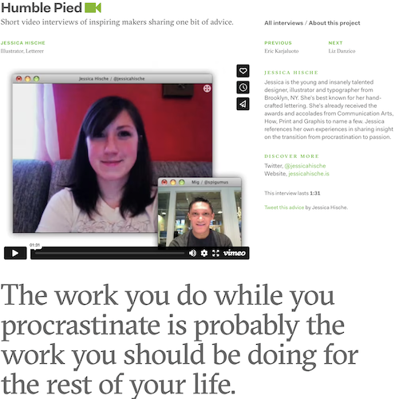

Jessica Hische / Humble Pied

“The work you do while you procrastinate is probably the work you should be doing for the rest of your life.”
Great advice. (or watch it on Vimeo)
Previously: Jimmy Corrigan: The Smartest Kid on Earth Next: Visual Timeline of Crayola Color Changes